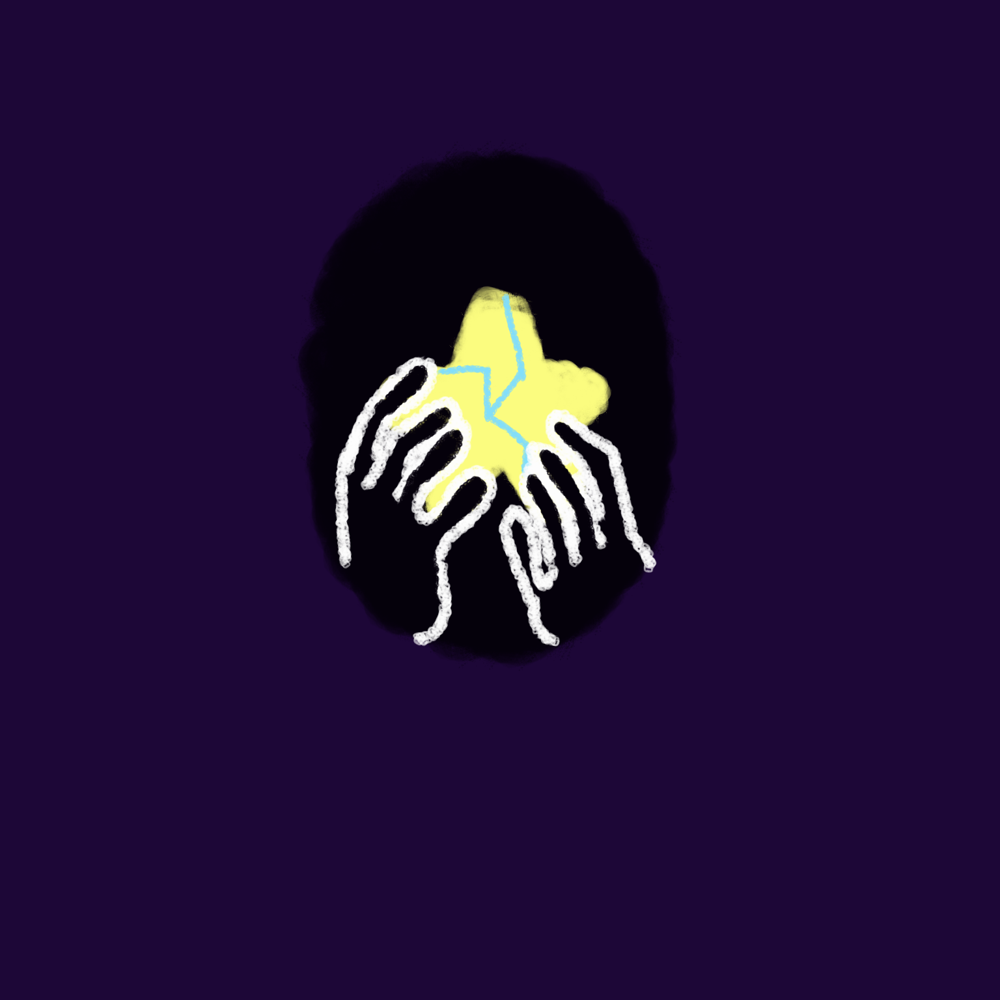

A PSA ON TEENAGE SUICIDE
ONCE UPON A TIME...
THERE WAS A GIRL NAMED PLUTO.
PLUTO WAS VERY LONELY INSIDE.
SHE FELT LIKE SHE LIVED IN THE HOLLOW SHELL OF A NAMELESS BODY.
THIS MADE PLUTO FEEL VERY ALONE IN THE UNIVERSE.
PLUTO FINDS THAT ITS HARD TO LIKE HERSELF BECAUSE OF THIS.
AND AS PUNISHMENT...
PLUTO HURTS HERSELF.
PLUTO WANTS TO FIND WAY TO FEEL BETTER, BUT SHE FEELS AS IF THERE IS NO HOPE.
SUICIDE IS THE SECOND LEADING CAUSE OF DEATH IN TEENAGERS. THE YOUTH OFTEN FEEL LIKE THEY HAVE NO ONE TO TURN TO.
TOGETHER, WE CAN HELP THEM UNDERSTAND THEMSELVES AND LET THEM KNOW THEY DO NOT FIGHT THIS BATTLE ALONE.
IF WE CAN BREAK OUT OF SOCIETY'S TOXIC MINDSET, WE CAN STRENGTH OUR YOUNG TO TRUST THEMSELVES, AND EVEN OTHERS.
IT MAY BE TOUGH, ESPECIALLY IF YOU FEEL PRESSURED BY OTHERS.
BUT THE JOURNEY WILL HELP YOU FIND YOURSELF, ISN'T THAT BETTER THAN GIVING INTO THE DARKNESS? TO FIND YOUR LIGHT.
SOMETIMES THE RESULT, IS WORTH THE FALL.
BECAUSE IT JUST MAY LEAD YOU TO A BETTER PLACE.
SUICIDE PREVENTION HOTLINE: 800-273-8255